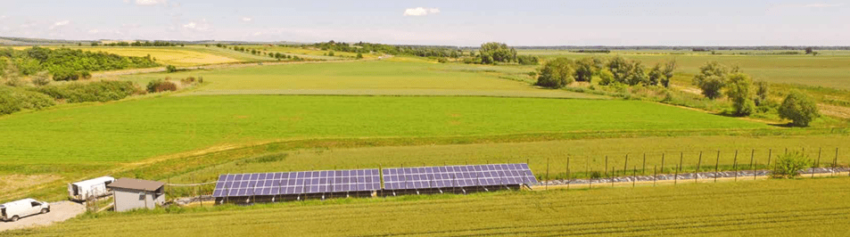

водяной насос сна солнечной батарее
Комплексное, эффективное решение для перекачки воды из скважин и водоемов в любой точке где нужно, без подвода электричества от сети. ДВА ВАРИАНТА:

 066-334-24-35
066-334-24-35
Комплексное, эффективное решение для перекачки воды из скважин и водоемов в любой точке где нужно, без подвода электричества от сети. ДВА ВАРИАНТА:
| № | Параметры скважины* | Тип насоса с блоком управления | Тип и количество солнечных панелей с каркасом | Монтажные работы | Количество воды в сутки |
|---|---|---|---|---|---|
| 1 | - осадочные породы, верхняя кора гранита, - Глубина 25-30м. | Скважинный: Lorentz PS2-150, нерж.сталь | Amerisolar AS-6M30-310Вт – 2 шт | 6 м³/сутки | |
| - обсадная труба Ø127мм, - дебит скважины 1 м³/час | - двигатель: ECDRIVE150 - диаметр 4 - макс мощность 300 Вт - блок управления |
||||
| 30000 грн | 38000 | 83006000 | 5000 | ||
| ИТОГО | 79000 | ||||
| 2 | - осадочные породы, верхняя кора гранита - Глубина 40-50м - обсадная труба Ø133мм - дебит скважины до 2,0 м³/час |
Скважинный: Pedrollo FLUID SOLAR 1, нерж.cталь - двигатель ЕС - диаметр 4 - макс мощность 750 Вт - блок управления |
AmerisolarAS-6M30-310Вт – 4шт | 12 м³/сутки | |
| 50000 | 28700 | 12000 | 6000 | ||
| ИТОГО | 96700 | ||||
| - осадочные породы, верхняя кора гранита - Глубина 70-110м - обсадная труба Ø133мм - дебит скважины до 2,0 м³/час |
Скважинный: Pedrollo FLUID SOLAR2/12, нерж.cталь - двигатель ЕС - диаметр 4 - макс мощность 1500 Вт - блок управления |
AmerisolarAS-6M30-310Вт – 8шт | 25 м³/сутки | ||
| 70000 | 32000 | 24000 | 8000 | ||
| ИТОГО | 134000 | ||||
| - осадочные породы - Глубина 70-110м - обсадная труба Ø159-200 мм - дебит скважины до 10 м³/час |
Скважинный: LorentzPS2-4000, нерж.cталь - двигатель: ECDRIVE - диаметр 4 - макс мощность 4000 Вт - блок управления |
||||
| 150000 | 100000 | 48000 | 12000 | ||
| ИТОГО | 310000 |